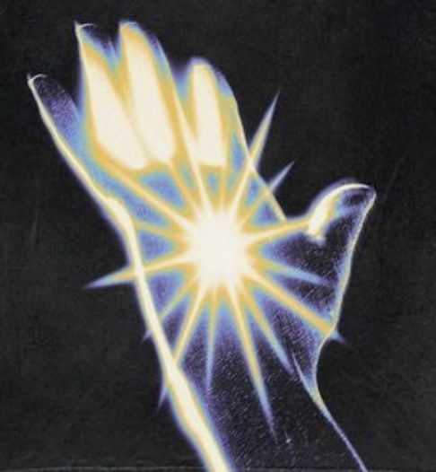
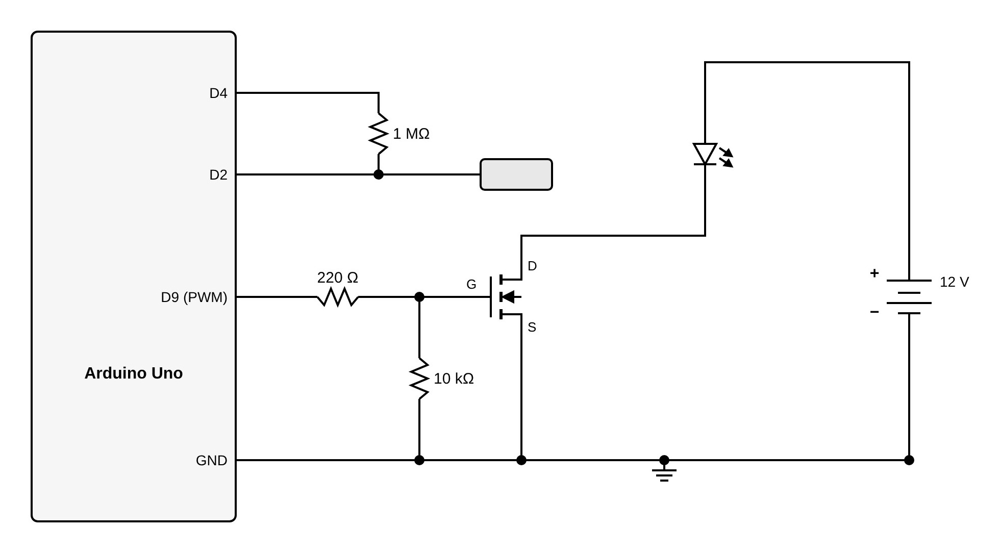
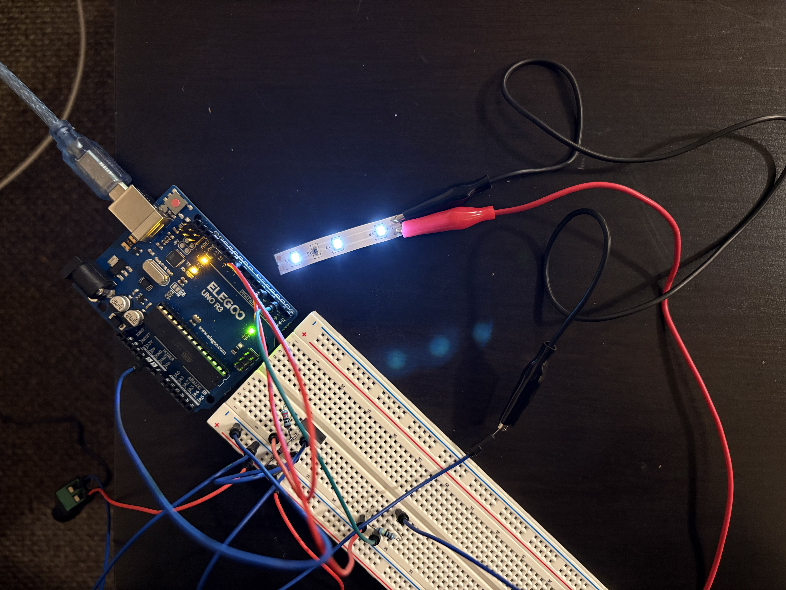
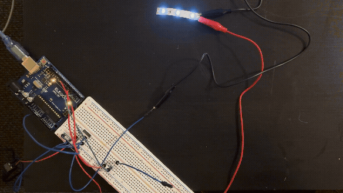
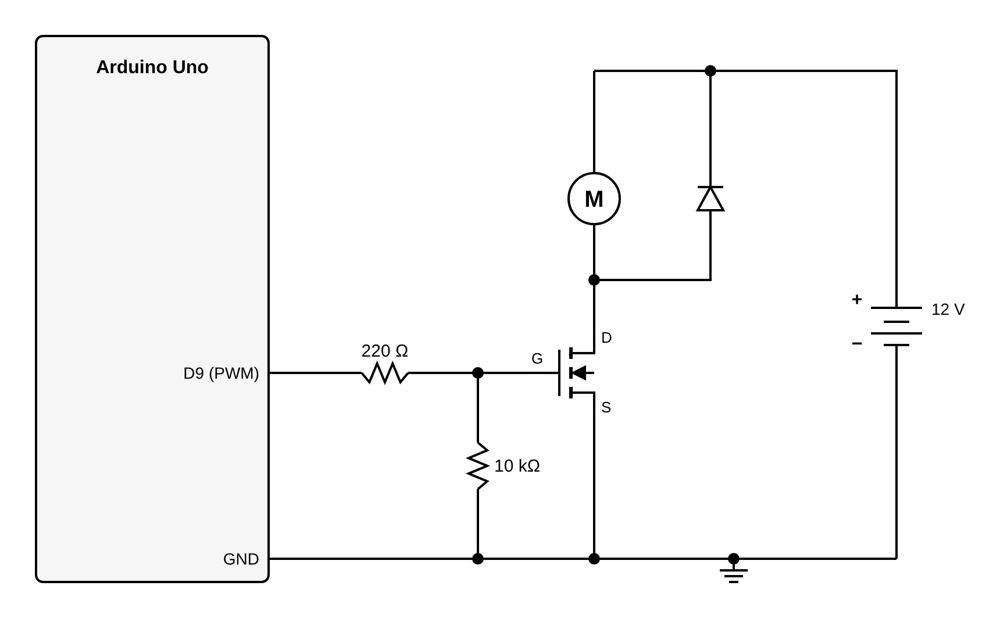
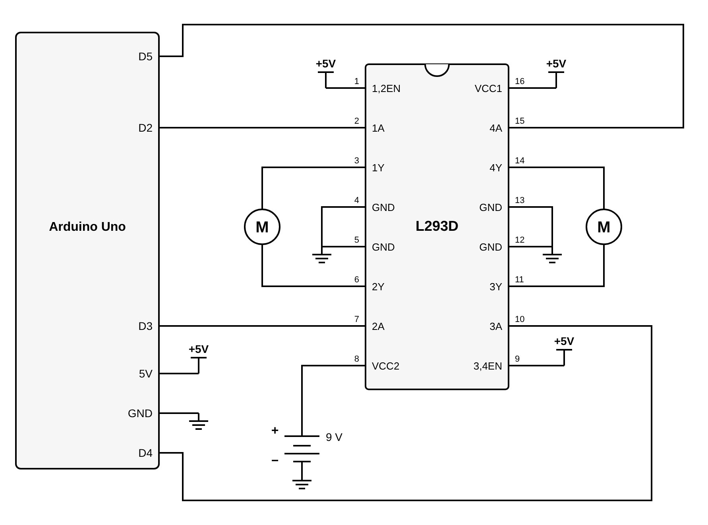

Here is all the documentation for assignment 5!

Schematic of the high-load circuit. On the logic side, digital pins 4 and 2 connect across a 1MΩ resistor to create a capacitive touch sensor using the CapacitiveSensor library. On the load side, PWM digital pin 9 connects through a 220Ω resistor to the Gate of an N-MOSFET (with a 10kΩ pull-down resistor to GND). The N-MOSFET switches the negative side of a 12V LED strip powered by an external 12V DC wall supply that shares a common ground with the Arduino.
Because this circuit separates 5V Arduino logic power from 12V external load power, each resistor value was chosen to protect the microcontroller pins while keeping the N-MOSFET switching reliably:
I = 5V / 1,000,000Ω = 5μA.
I = 5V / 220Ω ≈ 22.7mA, which stays safely below the Arduino Uno's 40mA maximum per-pin limit.
pinMode() sets the pin state), any stray static charge drains away and the 12V LED strip stays completely off instead of flickering.
Expected Voltages & Currents at Key Circuit Nodes:
analogWrite(255)).

Physical breadboard setup showing common ground shared between the Arduino GND pin and the negative terminal of the 12V power supply on the blue rail. Digital pins 4 and 2 connect across a 1MΩ resistor with a jumper wire acting as the capacitive touch pad. The N-MOSFET sits across rows 9, 10, and 11: row 9 (Gate) connects to pin 9 through a 220Ω resistor and to GND through a 10kΩ resistor; row 10 (Drain) connects to the negative wire of the 12V LED strip; and row 11 (Source) connects to the blue ground rail. The positive wire of the LED strip connects directly to the 12V red power rail.
// Include the CapacitiveSensor library to measure touch and proximity capacitance
#include
// Create a capacitive sensor object using Pin 4 as the send pin and Pin 2 as the receive pin
CapacitiveSensor touchSensor = CapacitiveSensor(4, 2);
// Define the PWM-capable Arduino pin connected to the N-MOSFET Gate
const int MOSFET_PIN = 9;
// Run once when the Arduino powers on or resets
void setup() {
// Initialize serial communication at 9600 bits per second to log sensor readings
Serial.begin(9600);
// Configure MOSFET_PIN as an OUTPUT; the pin initializes in a LOW (0V) state, keeping the transistor OFF
pinMode(MOSFET_PIN, OUTPUT);
}
// Run continuously after setup completes
void loop() {
// Collect 30 samples from the capacitive sensor to obtain a stable reading
long sensorValue = touchSensor.capacitiveSensor(30);
// Print the raw capacitive sensor value to the Serial Monitor
Serial.println(sensorValue);
// Map the sensor reading (0 to 1000) to an 8-bit PWM brightness range (255 to 0)
int brightness = map(sensorValue, 0, 1000, 255, 0);
// Constrain the brightness value so it strictly stays between 0 and 255
brightness = constrain(brightness, 0, 255);
// Output the PWM signal to the N-MOSFET Gate to control the 12V LED strip brightness
analogWrite(MOSFET_PIN, brightness);
// Pause for 50 milliseconds between readings to maintain smooth output and readable serial data
delay(50);
} 
Demonstration of the working circuit: touching the capacitive sensor wire changes the capacitance measured between pins 4 and 2, modulating the PWM signal sent from pin 9 to the N-MOSFET Gate and smoothly adjusting the brightness of the 12V LED strip.
Looking at the text printed on the front face of my N-MOSFET transistor, I am using the IRLZ44N. According to its datasheet, the absolute maximum continuous drain current (ID) between pins 2 (Drain) and 3 (Source) at 25°C is 47A.

Schematic of an Arduino controlling a DC motor through an N-MOSFET low-side switch, including a flyback diode wired in parallel across the motor terminals (cathode toward external +V, anode toward the MOSFET Drain) to protect the circuit from inductive voltage spikes when the motor switches off.
Example Components & Datasheets:

Schematic showing an Arduino Uno connected to a TI L293D quadruple half-H driver controlling two independent DC motors. Logic power (Pin 16) and enable pins (Pins 1 and 9) connect to 5V, motor supply (Pin 8) connects to external power, and all four ground pins (4, 5, 12, 13) tie to common ground.
// Pseudocode for controlling two DC motors with the L293D H-Bridge driver
// Pin mapping:
// Motor A inputs: Pin 2 (1A) and Pin 3 (2A), Enable (1,2EN) tied to 5V
// Motor B inputs: Pin 4 (3A) and Pin 5 (4A), Enable (3,4EN) tied to 5V
SETUP:
Configure pins 2, 3, 4, and 5 as OUTPUTS
LOOP:
// 1. Move both motors forward
Set Pin 2 HIGH and Pin 3 LOW // Motor A forward
Set Pin 4 HIGH and Pin 5 LOW // Motor B forward
Wait 2 seconds
// 2. Move both motors backward
Set Pin 2 LOW and Pin 3 HIGH // Motor A backward
Set Pin 4 LOW and Pin 5 HIGH // Motor B backward
Wait 2 seconds
// 3. Move Motor A forward and Motor B backward
Set Pin 2 HIGH and Pin 3 LOW // Motor A forward
Set Pin 4 LOW and Pin 5 HIGH // Motor B backward
Wait 2 seconds
// 4. Move Motor A backward and Motor B forward
Set Pin 2 LOW and Pin 3 HIGH // Motor A backward
Set Pin 4 HIGH and Pin 5 LOW // Motor B forward
Wait 2 secondsI did not use AI tools to complete this assignment.